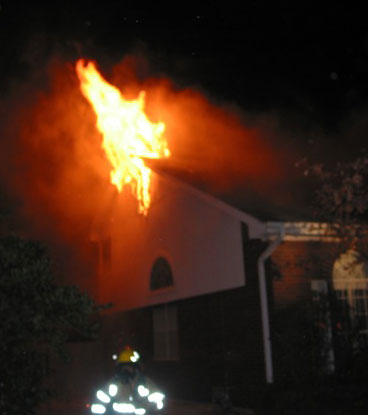

If you’re anything like me, you love the TLC fashion makeover show What Not to Wear, in which people submit their friends, mothers, wives, girlfriends, etc. (and the occasional male!) to the show for a much-needed fashion makeover. Snarky yet endearing hosts Stacy London and Clinton Kelly throw out everything they deem unacceptable in the woman’s wardrobe and give her $5,000 to buy a new one that adheres to the fashion rules they lay out. The experience is rounded out with an overhaul of hair and makeup. It’s basically girl porn.
Christine Acker


UT music school receives $55 million endowment
|

photo / jrossol  Please don’t stop the music
Please don’t stop the music
Please don’t stop the music Retired physician Ernest Butler and his wife Sarah, long-time musical arts connoisseurs, have given The University of Texas’ School of Music quite a gift – $55 million dollars. This gift is the second-largest that UT has ever received, superseded only by the John A. Jackson estate’s gift of $245 million to the School of Geosciences. The Butlers’ gift is more than the School of Business got from Red McCombs – $50 million.
About two-thirds of the money will go toward scholarships, and the rest will go toward faculty support. The school will be renamed The Sarah and Ernest Butler School of Music.
It’s wonderful to see such support of the arts!
Via Statesman.com
Two minutes with a female volunteer firefighter
|

courtesy MacKenzie Kelly / all rights reserved MacKenzie’s first fire
MacKenzie Kelly is a vet clinic at Banfield Pet Hospital by day, but at night she transforms into one of the only female volunteer firefighters around town. (She asked that we not disclose exactly which Austin suburb’s fire department she volunteers for.) That Other Paper’s Christine Acker sat down with MacKenzie to learn about volunteer firefighting and what it’s like being one of the few women in the field.
That Other Paper How did you get into volunteer firefighting, especially as a female?
MacKenzie Kelly I used it as another way to get away from my parents when I was in high school. I was taking health and science classes and I saw a post about firefighting in the Explorer program, which is a program designed to expose high school students to different career paths. I wanted to explore it because I thought it would be really cool.
TOP What was entailed in this firefighting class?
MK Basically, once or twice a week we would meet before the actual volunteers with the fire department would meet. We would do the same training that the volunteer firefighters would do, which was fun. We got to ride out of the fire station in the fire trucks. We wouldn’t actually get to run calls, but we would be able to help at calls. That made me want to become an actual volunteer firefighter.
Maestro of geek chic
|
What makes Patrick Phillips, the conductor of the Austin Wind Symphony and the founder and host of The Patrick Phillips Show, remarkable is that he channeled his geeky passions into creative outlets not just for himself, but for other people too.
Today is the last day to vote early
|
Today is the last day to vote early for the March 4 primaries, so make sure you leap on over (sorry, I couldn’t help it) to one of the voting locations and do your civic duty. There are several locations all over the city including several libraries, the Travis County Courthouse, and the UT campus, so pop on by on your lunch break. Check out the full list of locations here.

Need boxes? Go to Toy Joy
|
In a city like Austin where everyone is constantly changing residences, boxes are a hot commodity. But where to find them? Toy Joy, that mecca of the odd and entertaining on 29th and Guadalupe, is a free box free-for-all. Toy Joy recycles all their boxes anyway (yay for being green), so they’re happy to let people in need get some use out of them. Just go in and ask an employee, then head to the parking lot behind the store and box away.
Toy Joy: 2900 Guadalupe Street, Austin, TX 512-320-0090
Spotted: Free Hugs Campaign on Congress Avenue!
|
The Free Hugs Campaign has come to Austin! In case you’re not familiar:
Free hugs is a real life controversial story of Juan Mann, A man whos sole mission was to reach out and hug a stranger to brighten up their lives.
In this age of social disconnectivity and lack of human contact, the effects of the Free Hugs campaign became phenomenal.
Get a new toilet from the City of Austin
|
photo / jennybento
Looking for a way to save water? The City of Austin is bringing back their Toilet Replacement Program. The program will replace up to three of your toilets installed before 1996 with high-efficiency toilets that use only 1.28 gallons per flush (older toilets tend to use about five gallons of water per flush). You can cut down on your water bill and help the environment!
The Dark Knight, Lego style
|
I’m pretty psyched about the upcoming Batman movie, The Dark Knight, but I’m nowhere near as excited as this dude, who recreated the movie trailer with Legos. The still-motion trailer took about four well-spent afternoons to create and the result is Legolicious.
If you haven’t seen it already, watch the original trailer first.
What do you get when you turn a teddy bear inside out?
|
You get Bears, a brilliant art project by Kent Rogowski. Rogowski takes normal teddy bears, tears them apart, turns them inside-out, and restuffs them.
Sorry, Bexar County; Texas isn’t having a primary today
|
Our friends in Bexar County (home of San Antonio) are a little confused about Super Tuesday – several of them thought that Texas’s primary was today.
From ksat.com:More than 1,000 calls poured into the Bexar County Elections Department on Monday from voters wanting to know where they could vote in Tuesday’s primary.
“The voters think they’re actually going to the polls (Tuesday) because it’s Super Tuesday,” said Bexar County Elections Commissioner Jacque Callanen. “It’s all over the national media and the local media that there’s a big election.”
Sorry, guys – you’ve got to wait until February 19th!
Can a Jedi lightsaber cut through Superman?
|

A curious Malaysian comic book fan has asked the ultimate question: Can a Jedi lightsaber cut through Superman?
Save the planet for the price of a latte a month
|
Austinite Charles Wagner, president of MoveNeutral.com, is doing his part to change the world.
UT to have the most powerful laser ever — literally
|
photo / Guillermo Ruiz de Loizaga  Don’t let the sharks have it
Don’t let the sharks have it
Don’t let the sharks have it Congress has decided to fund a University of Texas at Austin project of building the world’s most powerful laser, which will have power exceeding 1,000 trillion watts and will be able to deliver the brightest light in the universe.
The laser will be built underneath the plaza of RLM on the UT campus. So every time you walk to RLM, you can think, Cool! The world’s most powerful laser is under my feet!
Related: UT gets nerdiest.computer.evar
A photo a day for eight years
|
What a cool idea. About nine years ago, at the age of 22, New Yorker Jonathan Keller decided to take a picture of himself every day for the rest of his life to create a time-lapse video. Now he’s 31, and the video below is the result of the first eight years of his photos.
Say goodbye to your light bulbs
|
Thanks to the new energy bill President Bush just signed into law, traditional light bulbs will be taken off the market in 2012 in order to conserve energy. Instead, you’ll have to buy CFLs (compact fluorescent lamps).
A step forward!
Christmas lights around town
|
So youve already been to the Trail of Lights and 37th Street and now youre looking for other places in Austin for spectacular Christmas light displays. Weve compiled a list of recommended neighborhoods. So grab a Thermos of hot cocoa, and set out to explore these neighborhoods. Who knows, you might even see Santa.
“w00t” is Merriam-Webster’s Word of the Year. w00t
|
photo / scjody
Following in the footsteps of Stephen Colbert’s “truthiness”, “w00t” is now Merriam-Webster’s 2007 Word of the Year. (I personally think “truthiness” deserved the title much more than “w00t.”)


Recent comments